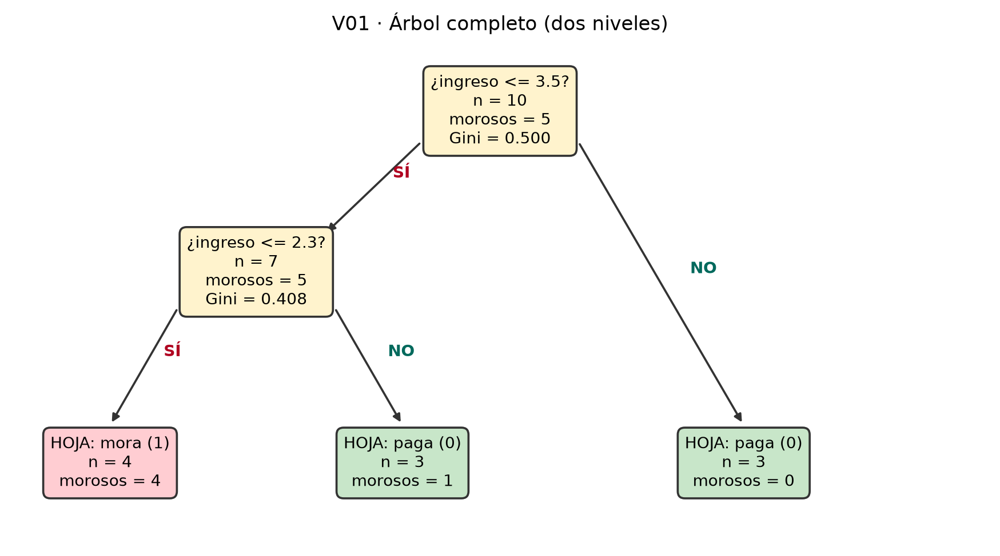

# =====================================================================
# IMPORTS: lo único que se necesita para todo el documento.
# numpy -> aritmética de arreglos (promedios, sumas, máscaras booleanas)
# pandas -> tablas (DataFrame) para ver los datos y resultados bonitos
# matplotlib -> dibujar el árbol de la Parte C
# IPython.display -> imprimir texto con formato Markdown en el output
# =====================================================================
import numpy as np # librería numérica estándar
import pandas as pd # tablas
import matplotlib.pyplot as plt # gráficos
from IPython.display import Markdown, display # para imprimir tablas/md
# ---- estilo de los gráficos: PUEDES TOCARLO, solo afecta el aspecto ----
plt.rcParams.update({
"figure.dpi": 110, # resolución: súbela a 150 si quieres más nitidez
"font.size": 9, # tamaño base de letra de los gráficos
"axes.spines.top": False, # quita el borde superior de los ejes (estética)
"axes.spines.right": False, # quita el borde derecho
})
def texto(md):
"""Imprime una cadena como Markdown enriquecido (títulos, negritas, fórmulas)."""
display(Markdown(md))01 · Árbol de decisión A MANO: el ejercicio del parcial, resuelto
Machine Learning · UTB 2026-II · Gini, cortes, árbol, matriz de confusión y métricas
Para qué sirve este documento
Este documento es un solver: reproduce con código, número por número, el ejercicio en clase “Árboles de decisión a mano” (10 clientes de un banco) y resuelve las 10 versiones del PDF de la actividad.
Cómo usarlo:
- En la Sección 3 está el diccionario
Vcon los datos de las 10 versiones. La líneaVERSION = "V01"es el único interruptor que normalmente cambias: al cambiarla, todo el documento (Partes A–F) se resuelve para esa versión. - Si el parcial trae otros datos (otros 10 clientes, otros cortes), usa la plantilla
V99de la Sección 6. - Cada bloque de código tiene comentarios exhaustivos que explican qué hace cada línea, qué parámetro se puede cambiar y qué efecto tiene.
Los números que produce este código son exactamente los que se obtienen a mano con las fórmulas de la actividad: solo es aritmética con las proporciones.
Las fórmulas del ejercicio
Parte A · Impureza de Gini de un nodo
Con dos clases (1 = mora, 0 = paga) y proporción \(p\) de morosos en el grupo:
\[G = 1 - p^2 - (1-p)^2 = 2p(1-p)\]
- \(G = 0\) cuando el nodo es puro (todos de una clase, \(p=0\) o \(p=1\)).
- \(G = 0.5\) cuando el nodo está revuelto al máximo (\(p = 0.5\)).
- Si los 10 clientes cayeran en mora: \(p=1 \Rightarrow G = 0\) (puro).
- Si fueran 5 y 5: \(p=0.5 \Rightarrow G = 0.5\) (máxima impureza).
Parte B · Gini ponderado de un corte
Un corte “variable \(\leq\) umbral” parte los \(n\) clientes en dos cajas (izquierda = SÍ cumple, derecha = NO cumple). La calidad del corte es el Gini de cada caja pesado por su tamaño:
\[G_{\text{partición}} = \frac{n_{\text{izq}}}{n}\, G_{\text{izq}} + \frac{n_{\text{der}}}{n}\, G_{\text{der}}\]
La ganancia del corte es cuánta impureza quita:
\[\text{ganancia} = G_{\text{raíz}} - G_{\text{partición}}\]
El corte ganador es el de menor \(G_{partici\acute{o}n}\) (equivalente: el de mayor ganancia).
Parte E · Matriz de confusión y métricas (positivo = mora = 1)
| Predicho mora (1) | Predicho paga (0) | |
|---|---|---|
| Real mora (1) | VP | FN |
| Real paga (0) | FP | VN |
\[\text{tasa base} = \max(p,\, 1-p) \qquad \text{exactitud} = \frac{VP+VN}{n} \qquad \text{precisión} = \frac{VP}{VP+FP} \qquad \text{recall} = \frac{VP}{VP+FN} \qquad F_1 = \frac{2\cdot \text{precisión}\cdot \text{recall}}{\text{precisión} + \text{recall}}\]
- Tasa base: lo que acertaría un tonto que predice siempre la clase mayoritaria. Un modelo sirve si supera esto.
- Precisión: de los que mandé a mora, cuántos eran mora de verdad.
- Recall: de todos los morosos reales, cuántos atrapé.
El solver
# =====================================================================
# FUNCIONES DEL SOLVER. Cada una corresponde a UNA parte del ejercicio.
# No necesitas modificar nada aquí para resolver las versiones V01-V10:
# todas las diferencias entre versiones viven en los DATOS (Sección 3).
# =====================================================================
def gini(y):
"""Gini de un nodo. y = arreglo/lista de 0s y 1s (1 = mora).
G = 1 - p^2 - (1-p)^2 = 2*p*(1-p), con p = proporcion de unos.
Caso especial: un grupo vacio (len=0) se define G=0 para que no rompa
las cuentas ponderadas (la actividad nunca lo usa, pero es defensa).
"""
if len(y) == 0: # grupo vacío
return 0.0
p = float(np.mean(y)) # p = (# morosos) / n -> Parte A, punto 1
return 2.0 * p * (1.0 - p)
def clase_mayoritaria(y):
"""Clase que predice una hoja: la mayoritaria.
int(media > 0.5) devuelve 1 SOLO si los unos son mayoria ESTRICTA.
En un empate exacto (media == 0.5, p.ej. 1 moroso de 2) devuelve 0:
'si empata, predice 0', que es lo que hace scikit-learn (lo dice la
actividad, Parte C). OJO: usar >= 0.5 aqui es el error clasico.
"""
return int(np.mean(y) > 0.5)
def evaluar_corte(df, variable, umbral):
"""Evalua UN corte candidato sobre el DataFrame df (Parte B, una fila
de la tabla del punto 3).
df : DataFrame con columnas 'ingreso', 'razon_deuda', 'mora'
variable : 'ingreso' o 'razon_deuda' (la columna por donde cortar)
umbral : número; el corte es variable <= umbral (izquierda=SÍ)
Devuelve un diccionario con: tamaños, morosos, Gini de cada lado y el
Gini PONDERADO del corte. Es la fórmula de la Parte B aplicada.
"""
# elegir la columna numérica sobre la que se corta
x = df["razon_deuda"] if variable == "razon_deuda" else df["ingreso"]
izq = x <= umbral # máscara booleana: True = cae a la izquierda (SÍ cumple)
n_izq, n_der = int(izq.sum()), int((~izq).sum()) # ~ niega: los de la derecha
mor_izq = int(df.loc[izq, "mora"].sum()) # morosos de la izquierda
mor_der = int(df.loc[~izq, "mora"].sum()) # morosos de la derecha
g_izq = gini(df.loc[izq, "mora"]) # Gini caja izquierda
g_der = gini(df.loc[~izq, "mora"]) # Gini caja derecha
# Gini ponderado: cada caja pesa según cuánta gente tiene (fórmula Parte B)
g_pond = (n_izq * g_izq + n_der * g_der) / len(df)
return {"corte": f"{variable} <= {umbral}", # nombre legible del corte
"n_izq": n_izq, "morosos_izq": mor_izq, "G_izq": g_izq,
"n_der": n_der, "morosos_der": mor_der, "G_der": g_der,
"G_ponderado": g_pond}
def tabla_cortes(df, cortes):
"""Tabla del punto 3 (Parte B): evalúa cada corte candidato y arma el
DataFrame con las columnas que pide la actividad.
cortes : lista de tuplas (variable, umbral), p.ej.
[('razon_deuda', 0.35), ('ingreso', 3.5), ('razon_deuda', 0.50)]
"""
return pd.DataFrame([evaluar_corte(df, v, u) for v, u in cortes])
def construir_arbol(df, cortes, segundo_corte):
"""Construye el árbol de DOS NIVELES de la actividad:
1. Parte B: prueba los cortes candidatos y se queda con el de MENOR
Gini ponderado -> ese es el corte de la RAÍZ.
2. Parte C: aplica el segundo corte PRESCRITO por la actividad sobre
el lado que ella indique (izq o der). El otro lado queda hoja.
segundo_corte : tupla (variable, umbral, lado)
lado = 'izq' si el segundo corte va sobre los que SÍ
cumplen la condición de la raíz; 'der' si va sobre los
que NO la cumplen (versiones V03 y V10 usan 'der').
Devuelve un diccionario A con todo: tabla de cortes, corte ganador,
las máscaras booleanas de cada hoja y la clase predicha de cada hoja.
"""
tab = tabla_cortes(df, cortes) # tabla del punto 3
i_mejor = tab["G_ponderado"].idxmin() # fila con MENOR Gini ponderado
var_r, u_r = cortes[i_mejor] # corte ganador: (variable, umbral)
var2, u2, lado2 = segundo_corte # segundo corte prescrito
# máscara de la raíz: quien cumple la condición de la raíz
x_r = df["razon_deuda"] if var_r == "razon_deuda" else df["ingreso"]
m_raiz = x_r <= u_r # True = cae a la izquierda (SÍ)
# columna y máscara del segundo nivel
x2 = df["razon_deuda"] if var2 == "razon_deuda" else df["ingreso"]
m_nodo2 = m_raiz if lado2 == "izq" else ~m_raiz # sobre qué lado se vuelve a preguntar
# las 3 hojas del árbol (cada una es una máscara booleana sobre df)
if lado2 == "izq":
hojas = {"izq_izq": m_raiz & (x2 <= u2), # SÍ raíz y SÍ corte 2
"izq_der": m_raiz & ~(x2 <= u2), # SÍ raíz y NO corte 2
"der": ~m_raiz} # NO raíz -> hoja directa
else:
hojas = {"izq": m_raiz, # SÍ raíz -> hoja directa
"der_izq": m_nodo2 & (x2 <= u2), # NO raíz y SÍ corte 2
"der_der": m_nodo2 & ~(x2 <= u2)} # NO raíz y NO corte 2
# clase de cada hoja: la mayoritaria (empate -> 0, como scikit-learn)
clases = {k: clase_mayoritaria(df.loc[m, "mora"]) for k, m in hojas.items()}
return {"tab": tab, "mejor": tab.loc[i_mejor],
"var_raiz": var_r, "u_raiz": u_r, # pregunta de la raíz
"var2": var2, "u2": u2, "lado2": lado2, # pregunta del nivel 2
"hojas": hojas, "clases": clases, # estructura aprendida
"G_raiz": gini(df["mora"]), "p_raiz": float(df["mora"].mean())}
def predecir(A, ingreso, razon_deuda):
"""Baja un cliente por el árbol hasta una hoja y devuelve su clase (0/1).
A : árbol que devuelve construir_arbol()
ingreso : ingreso del cliente en millones
razon_deuda : razón deuda/ingreso del cliente
Es literalmente la Parte D: responder la pregunta de la raíz; si cae al
lado donde hay segunda pregunta, responderla también; la clase de la
hoja donde cae es la predicción.
"""
# ¿cumple la condición de la raíz? (elegir la columna correcta)
x_r = razon_deuda if A["var_raiz"] == "razon_deuda" else ingreso
if x_r <= A["u_raiz"]: # cayó a la IZQUIERDA (SÍ)
if A["lado2"] == "izq": # ese lado tiene 2ª pregunta
x2 = razon_deuda if A["var2"] == "razon_deuda" else ingreso
return A["clases"]["izq_izq" if x2 <= A["u2"] else "izq_der"]
return A["clases"]["izq"] # hoja directa
else: # cayó a la DERECHA (NO)
if A["lado2"] == "der": # ese lado tiene 2ª pregunta
x2 = razon_deuda if A["var2"] == "razon_deuda" else ingreso
return A["clases"]["der_izq" if x2 <= A["u2"] else "der_der"]
return A["clases"]["der"] # hoja directa# =====================================================================
# DIBUJO DEL ÁRBOL (Parte C, punto 6: 'dibuje aquí su árbol').
# No cambia ningún cálculo: solo dibuja la estructura que ya construyó
# construir_arbol(). Posiciones fijas: raíz arriba, 3 hojas abajo.
# =====================================================================
def dibujar_arbol(A, df, titulo=""):
"""Dibuja el árbol de 2 niveles con cajas: pregunta, n, morosos y Gini
en los nodos; clase predicha, n y morosos en las hojas."""
mora = df["mora"].to_numpy() # etiquetas 0/1 como arreglo
fig, ax = plt.subplots(figsize=(10, 5.2)) # tamaño del lienzo: AJUSTABLE
ax.axis("off") # sin ejes: es un diagrama
ax.set_xlim(0, 10); ax.set_ylim(0, 10) # lienzo de 10x10 unidades
# máscaras de la raíz y del segundo nivel (mismas que construir_arbol)
x_r = df["razon_deuda"] if A["var_raiz"] == "razon_deuda" else df["ingreso"]
m_raiz = (x_r <= A["u_raiz"]).to_numpy()
m_nodo2 = m_raiz if A["lado2"] == "izq" else ~m_raiz
m2a = A["hojas"]["izq_izq"] if A["lado2"] == "izq" else A["hojas"]["der_izq"]
m2b = A["hojas"]["izq_der"] if A["lado2"] == "izq" else A["hojas"]["der_der"]
m3 = A["hojas"]["der"] if A["lado2"] == "izq" else A["hojas"]["izq"]
def caja(x, y, contenido, color):
"""Dibuja una caja de texto redondeada en (x, y)."""
ax.annotate(contenido, xy=(x, y), ha="center", va="center",
fontsize=9, # tamaño de letra: AJUSTABLE
bbox=dict(boxstyle="round,pad=0.45", fc=color, ec="#333333", lw=1.2))
def flecha(x1, y1, x2, y2, etiqueta, dx=0.2):
"""Flecha de (x1,y1) a (x2,y2) con etiqueta SÍ/NO."""
ax.annotate("", xy=(x2, y2), xytext=(x1, y1),
arrowprops=dict(arrowstyle="-|>", color="#333333", lw=1.2))
ax.text((x1 + x2) / 2 + dx, (y1 + y2) / 2 + 0.2, etiqueta,
fontsize=9, fontweight="bold",
color="#B00020" if etiqueta == "SÍ" else "#00695C")
def txt_preg(m, var, u):
"""Texto de un nodo pregunta: la pregunta + n + morosos + Gini."""
return (f"¿{var} <= {u}?\nn = {int(m.sum())}\n"
f"morosos = {int(mora[m].sum())}\nGini = {gini(mora[m]):.3f}")
def txt_hoja(m):
"""Texto de una hoja: clase mayoritaria + n + morosos."""
c = clase_mayoritaria(mora[m])
return (f"HOJA: {'mora (1)' if c == 1 else 'paga (0)'}\n"
f"n = {int(m.sum())}\nmorosos = {int(mora[m].sum())}")
# color de cada hoja según su clase (rojo=mora, verde=paga): AJUSTABLE
col_h = lambda m: "#FFCDD2" if clase_mayoritaria(mora[m]) == 1 else "#C8E6C9"
# posiciones: el nodo interno va al lado donde hay segunda pregunta
x_int = 2.5 if A["lado2"] == "izq" else 7.5 # nodo de nivel 2
x_sol = 7.5 if A["lado2"] == "izq" else 2.5 # hoja colgada directa de la raíz
et_r_izq = "SÍ" if A["lado2"] == "izq" else "NO" # etiqueta hacia el nodo interno
et_r_der = "NO" if A["lado2"] == "izq" else "SÍ" # etiqueta hacia la hoja directa
# flechas raíz -> hijos, y nodo interno -> sus dos hojas
flecha(4.2, 8.0, x_int + 0.7, 6.15, et_r_izq)
flecha(5.8, 8.0, x_sol, 2.35, et_r_der, dx=0.3)
flecha(x_int - 0.8, 4.7, 1.0, 2.35, "SÍ")
flecha(x_int + 0.8, 4.7, 4.0, 2.35, "NO")
# cajas: raíz (amarillo), nodo interno (amarillo), hojas (verde/rojo)
caja(5.0, 8.6, txt_preg(np.ones(len(mora), dtype=bool), A["var_raiz"], A["u_raiz"]), "#FFF3CD")
caja(x_int, 5.4, txt_preg(m_nodo2, A["var2"], A["u2"]), "#FFF3CD")
caja(1.0, 1.6, txt_hoja(m2a), col_h(m2a))
caja(4.0, 1.6, txt_hoja(m2b), col_h(m2b))
caja(x_sol, 1.6, txt_hoja(m3), col_h(m3))
if titulo:
ax.set_title(titulo, fontsize=11) # título del gráfico: AJUSTABLE
return fig# =====================================================================
# RESOLVER UNA VERSIÓN COMPLETA: junta todas las partes (A a F) y devuelve
# un diccionario 's' con TODAS las respuestas de la actividad, más el árbol
# 'A', el DataFrame de entrenamiento 'df' y el de prueba 'prueba'.
# =====================================================================
def resolver_version(ver_id, V):
d = V[ver_id] # datos de la versión elegida
# DataFrame de entrenamiento: los 10 clientes del historial
df = pd.DataFrame(d["clientes"],
columns=["cliente", "ingreso", "razon_deuda", "mora"])
A = construir_arbol(df, d["cortes"], d["segundo_corte"]) # árbol
# ---- Parte A: p y Gini de la raíz -------------------------------
s = {"version": ver_id, "p_raiz": A["p_raiz"], "G_raiz": A["G_raiz"]}
# ---- Parte B: corte ganador, Gini ponderado y ganancia ----------
s["corte_ganador"] = A["mejor"]["corte"]
s["G_pond_raiz"] = A["mejor"]["G_ponderado"]
s["ganancia"] = A["G_raiz"] - A["mejor"]["G_ponderado"]
# ---- Parte C: el segundo nivel -----------------------------------
var2, u2, lado2 = d["segundo_corte"]
# máscara del nodo que se vuelve a partir
x_r = df["razon_deuda"] if A["var_raiz"] == "razon_deuda" else df["ingreso"]
m_nodo2 = (x_r <= A["u_raiz"]).to_numpy() if lado2 == "izq" \
else ~(x_r <= A["u_raiz"]).to_numpy()
x2 = df["razon_deuda"] if var2 == "razon_deuda" else df["ingreso"]
m2a = m_nodo2 & (x2 <= u2).to_numpy() # hoja izquierda del 2º corte
m2b = m_nodo2 & ~(x2 <= u2).to_numpy() # hoja derecha del 2º corte
mora = df["mora"].to_numpy()
# respuestas del punto 5: n y morosos a cada lado, dos Gini y el ponderado
s.update({"nodo2_n": int(m_nodo2.sum()), "nodo2_morosos": int(mora[m_nodo2].sum()),
"n2_izq": int(m2a.sum()), "n2_der": int(m2b.sum()),
"m2a_morosos": int(mora[m2a].sum()), # morosos hoja izq del 2º corte
"m2b_morosos": int(mora[m2b].sum()), # morosos hoja der del 2º corte
"G2_izq": gini(mora[m2a]), "G2_der": gini(mora[m2b]),
"G2_pond": (int(m2a.sum()) * gini(mora[m2a])
+ int(m2b.sum()) * gini(mora[m2b])) / int(m_nodo2.sum())})
# ---- Parte D: los dos solicitantes -------------------------------
s["S"] = {nom: predecir(A, ing, raz) for nom, ing, raz in d["solicitantes"]}
# ---- Parte E: prueba, matriz de confusión y métricas --------------
prueba = pd.DataFrame(d["prueba"],
columns=["cliente", "ingreso", "razon_deuda", "mora_real"])
# predicción del árbol para cada cliente de prueba (bajar por el árbol)
prueba["pred"] = [predecir(A, i, r)
for i, r in zip(prueba["ingreso"], prueba["razon_deuda"])]
# celdas de la matriz de confusión (positivo = mora = 1)
VP = int(((prueba["mora_real"] == 1) & (prueba["pred"] == 1)).sum())
FN = int(((prueba["mora_real"] == 1) & (prueba["pred"] == 0)).sum())
FP = int(((prueba["mora_real"] == 0) & (prueba["pred"] == 1)).sum())
VN = int(((prueba["mora_real"] == 0) & (prueba["pred"] == 0)).sum())
n = len(prueba)
p_test = prueba["mora_real"].mean() # proporción de mora en la prueba
s.update({"VP": VP, "FN": FN, "FP": FP, "VN": VN,
"tasa_base": max(p_test, 1 - p_test), # max(p, 1-p) de la PRUEBA
"exactitud": (VP + VN) / n,
"precision": VP / (VP + FP) if VP + FP else 0.0, # 0 si no hay positivos predichos
"recall": VP / (VP + FN) if VP + FN else 0.0}) # 0 si no hay morosos reales
s["f1"] = (2 * s["precision"] * s["recall"] / (s["precision"] + s["recall"])
if s["precision"] + s["recall"] else 0.0) # 0 si P+R = 0
return s, A, df, pruebaLos datos de las 10 versiones
# =====================================================================
# DATOS DE LAS 10 VERSIONES DE LA ACTIVIDAD (extraídos del PDF).
#
# CÓMO LEERLO: cada versión es un diccionario con:
# clientes : 10 tuplas (nombre, ingreso, razon_deuda, mora) <- entrenamiento
# cortes : los 3 cortes candidatos de la Parte B (los mismos
# en todas las versiones: razon<=0.35, ingreso<=3.5,
# razon<=0.50). SI EL PARCIAL DA OTROS, CÁMBIALOS AQUÍ.
# segundo_corte : (variable, umbral, lado) que la actividad manda usar
# en el nivel 2. lado='izq' sobre los que SÍ cumplen,
# 'der' sobre los que NO cumplen (solo V03 y V10).
# solicitantes : tuplas (nombre, ingreso, razon) de la Parte D.
# prueba : tuplas (nombre, ingreso, razon, mora_real) Parte E.
# =====================================================================
CORTES_BASE = [("razon_deuda", 0.35), ("ingreso", 3.5), ("razon_deuda", 0.50)]
def _v(cli, sc, sol, prueba):
"""Acorta la escritura: arma el diccionario de una versión."""
return {"clientes": cli, "cortes": CORTES_BASE, "segundo_corte": sc,
"solicitantes": sol, "prueba": prueba}
V = {
# --------------------------------------------------------------- V01
"V01": _v([("C1",2.3,0.51,1),("C2",3.2,0.16,0),("C3",2.9,0.33,0),
("C4",4.3,0.41,0),("C5",6.2,0.36,0),("C6",1.8,0.23,1),
("C7",5.6,0.55,0),("C8",1.8,0.62,1),("C9",3.2,0.34,1),
("C10",1.8,0.49,1)],
("ingreso", 2.3, "izq"),
[("S1",2.0,0.60),("S2",6.0,0.21)],
[("P1",2.4,0.64,1),("P2",3.3,0.36,0),("P3",5.4,0.60,1),
("P4",1.8,0.36,1),("P5",3.9,0.53,0),("P6",3.7,0.23,0),
("P7",5.5,0.22,0),("P8",5.1,0.45,0)]),
# --------------------------------------------------------------- V02
"V02": _v([("C1",2.3,0.23,0),("C2",2.0,0.51,1),("C3",3.7,0.53,1),
("C4",2.9,0.23,0),("C5",3.9,0.52,0),("C6",4.8,0.47,0),
("C7",2.1,0.56,1),("C8",3.0,0.36,0),("C9",3.0,0.47,1),
("C10",4.7,0.16,0)],
("razon_deuda", 0.36, "izq"),
[("S1",4.1,0.44),("S2",4.5,0.27)],
[("P1",6.3,0.33,0),("P2",1.8,0.48,1),("P3",2.1,0.51,0),
("P4",5.6,0.43,0),("P5",1.7,0.58,1),("P6",4.5,0.41,0),
("P7",4.2,0.34,0),("P8",2.9,0.24,0)]),
# --------------------------------------------------------------- V03
"V03": _v([("C1",5.1,0.46,0),("C2",3.6,0.42,0),("C3",3.6,0.62,1),
("C4",5.4,0.64,0),("C5",3.2,0.26,1),("C6",2.0,0.20,0),
("C7",3.9,0.29,0),("C8",6.3,0.62,0),("C9",2.1,0.37,1),
("C10",3.6,0.52,1)],
("ingreso", 3.6, "der"), # OJO: en V03 el 2º corte va al lado DERECHO
[("S1",3.6,0.43),("S2",4.7,0.61)],
[("P1",4.9,0.36,0),("P2",5.2,0.27,0),("P3",1.8,0.18,0),
("P4",5.9,0.40,0),("P5",4.5,0.57,0),("P6",1.9,0.60,1),
("P7",5.0,0.46,0),("P8",4.4,0.57,1)]),
# --------------------------------------------------------------- V04
"V04": _v([("C1",4.0,0.61,1),("C2",2.4,0.64,1),("C3",3.2,0.26,0),
("C4",2.7,0.56,1),("C5",2.2,0.38,0),("C6",1.5,0.23,0),
("C7",3.6,0.42,0),("C8",2.1,0.50,1),("C9",6.1,0.26,0),
("C10",2.6,0.30,0)],
("ingreso", 2.1, "izq"),
[("S1",4.0,0.35),("S2",3.7,0.54)],
[("P1",1.8,0.36,0),("P2",5.1,0.40,0),("P3",3.6,0.19,0),
("P4",3.8,0.24,0),("P5",1.9,0.41,1),("P6",2.8,0.64,1),
("P7",5.4,0.31,0),("P8",5.8,0.42,0)]),
# --------------------------------------------------------------- V05
"V05": _v([("C1",4.3,0.59,1),("C2",1.6,0.63,1),("C3",2.8,0.46,0),
("C4",2.4,0.34,1),("C5",4.4,0.26,0),("C6",4.8,0.58,0),
("C7",5.8,0.43,0),("C8",3.5,0.20,0),("C9",1.6,0.26,1),
("C10",5.2,0.38,0)],
("ingreso", 2.4, "izq"),
[("S1",1.9,0.24),("S2",5.0,0.54)],
[("P1",3.7,0.33,0),("P2",6.0,0.23,0),("P3",5.6,0.24,0),
("P4",1.9,0.49,1),("P5",2.4,0.34,0),("P6",5.1,0.25,0),
("P7",2.3,0.59,1),("P8",5.3,0.20,0)]),
# --------------------------------------------------------------- V06
"V06": _v([("C1",4.5,0.57,1),("C2",5.2,0.37,0),("C3",3.3,0.63,1),
("C4",5.9,0.40,0),("C5",4.8,0.58,0),("C6",2.3,0.33,1),
("C7",3.6,0.28,0),("C8",6.1,0.22,0),("C9",3.9,0.57,1),
("C10",3.0,0.31,0)],
("ingreso", 3.0, "izq"),
[("S1",5.7,0.52),("S2",2.5,0.28)],
[("P1",5.2,0.48,0),("P2",1.9,0.42,1),("P3",5.9,0.51,0),
("P4",4.8,0.47,0),("P5",2.5,0.64,1),("P6",3.1,0.27,0),
("P7",4.8,0.26,0),("P8",3.0,0.59,0)]),
# --------------------------------------------------------------- V07
"V07": _v([("C1",1.9,0.63,1),("C2",6.2,0.52,1),("C3",3.3,0.59,1),
("C4",6.0,0.51,0),("C5",5.3,0.25,0),("C6",1.6,0.26,1),
("C7",6.1,0.37,0),("C8",1.5,0.57,1),("C9",6.1,0.54,0),
("C10",2.6,0.34,0)],
("ingreso", 1.9, "izq"),
[("S1",2.3,0.39),("S2",4.7,0.21)],
[("P1",3.1,0.37,0),("P2",2.2,0.25,0),("P3",2.9,0.61,1),
("P4",1.7,0.28,0),("P5",1.6,0.24,1),("P6",2.6,0.23,0),
("P7",4.1,0.24,1),("P8",3.0,0.33,0)]),
# --------------------------------------------------------------- V08
"V08": _v([("C1",4.8,0.38,0),("C2",5.2,0.34,0),("C3",3.5,0.51,1),
("C4",2.9,0.27,0),("C5",2.9,0.18,1),("C6",5.8,0.33,0),
("C7",3.5,0.51,1),("C8",5.3,0.37,0),("C9",4.1,0.36,0),
("C10",6.0,0.63,1)],
("ingreso", 2.9, "izq"),
[("S1",2.0,0.20),("S2",5.3,0.50)],
[("P1",3.5,0.47,0),("P2",4.9,0.63,0),("P3",5.6,0.19,0),
("P4",2.2,0.19,0),("P5",3.2,0.57,1),("P6",3.1,0.55,1),
("P7",3.5,0.58,0),("P8",5.6,0.17,0)]),
# --------------------------------------------------------------- V09
"V09": _v([("C1",2.3,0.45,1),("C2",4.2,0.19,0),("C3",1.9,0.16,0),
("C4",1.9,0.57,1),("C5",1.8,0.48,0),("C6",6.4,0.61,0),
("C7",1.8,0.62,1),("C8",3.4,0.49,1),("C9",3.8,0.48,0),
("C10",5.0,0.16,0)],
("razon_deuda", 0.48, "izq"),
[("S1",2.0,0.54),("S2",5.7,0.43)],
[("P1",4.8,0.62,0),("P2",2.2,0.28,0),("P3",5.3,0.36,0),
("P4",2.9,0.55,1),("P5",4.6,0.46,0),("P6",6.4,0.35,0),
("P7",4.8,0.25,0),("P8",4.4,0.48,1)]),
# --------------------------------------------------------------- V10
"V10": _v([("C1",3.4,0.26,0),("C2",4.0,0.59,1),("C3",6.4,0.38,0),
("C4",5.0,0.57,0),("C5",2.4,0.52,1),("C6",2.4,0.21,0),
("C7",1.8,0.59,1),("C8",3.8,0.58,1),("C9",6.4,0.37,0),
("C10",6.4,0.15,0)],
("ingreso", 3.8, "der"), # OJO: en V10 el 2º corte va al lado DERECHO
[("S1",4.7,0.59),("S2",2.9,0.42)],
[("P1",4.2,0.43,0),("P2",1.9,0.50,1),("P3",3.6,0.28,0),
("P4",2.1,0.56,1),("P5",5.8,0.33,0),("P6",3.0,0.57,1),
("P7",6.1,0.56,0),("P8",6.4,0.41,0)]),
}
# ╔═════════════════════════════════════════════════════════════════╗
# ║ CAMBIA AQUÍ: la versión que quieres resolver. ║
# ║ Válidas: "V01" ... "V10" (o "V99" si agregas una nueva abajo). ║
# ╚═════════════════════════════════════════════════════════════════╝
VERSION = "V01"Ejemplo paso a paso: versión V01
Nota: el ejemplo de esta sección corresponde a
VERSION = "V01". Si cambias esa línea en la Sección 3 y vuelves a renderizar, todos los números de abajo se recalculan para la versión que elijas.
| cliente | ingreso | razon_deuda | mora | |
|---|---|---|---|---|
| 0 | C1 | 2.3 | 0.51 | 1 |
| 1 | C2 | 3.2 | 0.16 | 0 |
| 2 | C3 | 2.9 | 0.33 | 0 |
| 3 | C4 | 4.3 | 0.41 | 0 |
| 4 | C5 | 6.2 | 0.36 | 0 |
| 5 | C6 | 1.8 | 0.23 | 1 |
| 6 | C7 | 5.6 | 0.55 | 0 |
| 7 | C8 | 1.8 | 0.62 | 1 |
| 8 | C9 | 3.2 | 0.34 | 1 |
| 9 | C10 | 1.8 | 0.49 | 1 |
Parte A · ¿Qué tan revuelta está la caja?
# Punto 1: p y el Gini de la RAÍZ (los 10 clientes del historial).
# p = morosos / total
# Gini = 2*p*(1-p)
texto(f"""**Respuesta punto 1.** Morosos = {int(df['mora'].sum())} de {len(df)}
clientes, entonces $p = {int(df['mora'].sum())}/{len(df)} = {s['p_raiz']:.3f}$
y $G = 2 \\cdot {s['p_raiz']:.3f} \\cdot {1-s['p_raiz']:.3f} = \\mathbf{{{s['G_raiz']:.3f}}}$.
**Respuesta punto 2.** Si los 10 cayeran en mora, $p=1$ y $G=0$ (caja pura:
no hay revuelta). Si fueran 5 y 5, $p=0.5$ y $G=0.5$ (revuelta máxima:
la fórmula vale 0.5 justo cuando las dos clases pesan igual).""")Respuesta punto 1. Morosos = 5 de 10 clientes, entonces \(p = 5/10 = 0.500\) y \(G = 2 \cdot 0.500 \cdot 0.500 = \mathbf{0.500}\).
Respuesta punto 2. Si los 10 cayeran en mora, \(p=1\) y \(G=0\) (caja pura: no hay revuelta). Si fueran 5 y 5, \(p=0.5\) y \(G=0.5\) (revuelta máxima: la fórmula vale 0.5 justo cuando las dos clases pesan igual).
Parte B · Elegir la primera pregunta
# Punto 3: la tabla de los tres cortes candidatos.
# 'tab' ya trae todas las columnas que pide la actividad.
A["tab"].round(3)| corte | n_izq | morosos_izq | G_izq | n_der | morosos_der | G_der | G_ponderado | |
|---|---|---|---|---|---|---|---|---|
| 0 | razon_deuda <= 0.35 | 4 | 2 | 0.500 | 6 | 3 | 0.500 | 0.500 |
| 1 | ingreso <= 3.5 | 7 | 5 | 0.408 | 3 | 0 | 0.000 | 0.286 |
| 2 | razon_deuda <= 0.5 | 7 | 3 | 0.490 | 3 | 2 | 0.444 | 0.476 |
# Punto 4: cuál corte gana y por cuánto (la ganancia).
# El ganador es el de MENOR Gini ponderado (cajas menos revueltas en total).
# Precomputamos la lista de los otros dos cortes para mostrarla en el texto.
otras = ", ".join("{}: {:.3f}".format(r["corte"], r["G_ponderado"])
for _, r in A["tab"].drop(A["mejor"].name).iterrows())
texto(f"""**Respuesta punto 4.** Gana **{s['corte_ganador']}** porque es el corte con
*menor* Gini ponderado ($G_{{part}} = {s['G_pond_raiz']:.3f}$, contra {otras}).
Su ganancia es $G_{{\\text{{raíz}}}} - G_{{\\text{{part}}}} = {s['G_raiz']:.3f} - {s['G_pond_raiz']:.3f} = \\mathbf{{{s['ganancia']:.3f}}}$.
*Comprobación interna:* en las tres filas $n_{{izq}} + n_{{der}} = 10$ y todo
Gini queda entre 0 y 0.5. ✓""")Respuesta punto 4. Gana ingreso <= 3.5 porque es el corte con menor Gini ponderado (\(G_{part} = 0.286\), contra razon_deuda <= 0.35: 0.500, razon_deuda <= 0.5: 0.476). Su ganancia es \(G_{\text{raíz}} - G_{\text{part}} = 0.500 - 0.286 = \mathbf{0.214}\).
Comprobación interna: en las tres filas \(n_{izq} + n_{der} = 10\) y todo Gini queda entre 0 y 0.5. ✓
Parte C · El segundo nivel
# Punto 5: partir OTRA VEZ el nodo que quedó revuelto.
# nodo2_n / nodo2_morosos: cuántos clientes y morosos tiene ese nodo.
# n2_izq / n2_der: cuántos caen a cada lado del segundo corte.
# G2_izq / G2_der / G2_pond: los dos Gini y el ponderado del nodo partido.
texto(f"""El corte ganador ({s['corte_ganador']}) deja un nodo revuelto del lado
**{'izquierdo (los que SÍ cumplen)' if A['lado2'] == 'izq' else 'derecho (los que NO cumplen)'}**
con **{s['nodo2_n']}** clientes, de los cuales **{s['nodo2_morosos']}** son morosos.
La actividad manda partirlo con `{A['var2']} <= {A['u2']}`:
* izquierda: $n = {s['n2_izq']}$, morosos = {s['m2a_morosos']}, $G = {s['G2_izq']:.3f}$
* derecha: $n = {s['n2_der']}$, morosos = {s['m2b_morosos']}, $G = {s['G2_der']:.3f}$
* Gini ponderado del nodo partido:
$\\frac{{{s['n2_izq']} \\cdot {s['G2_izq']:.3f} + {s['n2_der']} \\cdot {s['G2_der']:.3f}}}{{{s['nodo2_n']}}} = \\mathbf{{{s['G2_pond']:.3f}}}$""")El corte ganador (ingreso <= 3.5) deja un nodo revuelto del lado izquierdo (los que SÍ cumplen) con 7 clientes, de los cuales 5 son morosos. La actividad manda partirlo con ingreso <= 2.3:
- izquierda: \(n = 4\), morosos = 4, \(G = 0.000\)
- derecha: \(n = 3\), morosos = 1, \(G = 0.444\)
- Gini ponderado del nodo partido: \(\frac{4 \cdot 0.000 + 3 \cdot 0.444}{7} = \mathbf{0.190}\)

Parte D · Usar el árbol
# Punto 7: bajar por el árbol con los dos solicitantes.
# predecir() responde la pregunta de la raíz y, si cae al lado con segunda
# pregunta, también la responde; la clase de la hoja es la predicción.
lin = []
for nom, ing, raz in V[VERSION]["solicitantes"]:
lin.append(f"* **{nom}** (ingreso {ing}, razón {raz}): "
f"predicción = **{'mora (1)' if s['S'][nom]==1 else 'paga (0)'}**")
texto("**Respuesta punto 7.**\n\n" + "\n".join(lin))Respuesta punto 7.
- S1 (ingreso 2.0, razón 0.6): predicción = mora (1)
- S2 (ingreso 6.0, razón 0.21): predicción = paga (0)
Parte E · Evaluar con clientes que no vio
# Punto 9: la columna 'pred' es el árbol bajado a mano por cada cliente
# de prueba; 'mora_real' es lo que de verdad pasó.
prueba| cliente | ingreso | razon_deuda | mora_real | pred | |
|---|---|---|---|---|---|
| 0 | P1 | 2.4 | 0.64 | 1 | 0 |
| 1 | P2 | 3.3 | 0.36 | 0 | 0 |
| 2 | P3 | 5.4 | 0.60 | 1 | 0 |
| 3 | P4 | 1.8 | 0.36 | 1 | 1 |
| 4 | P5 | 3.9 | 0.53 | 0 | 0 |
| 5 | P6 | 3.7 | 0.23 | 0 | 0 |
| 6 | P7 | 5.5 | 0.22 | 0 | 0 |
| 7 | P8 | 5.1 | 0.45 | 0 | 0 |
# Puntos 10 y 11: matriz de confusión (positivo = mora) y métricas.
# VP: real mora y predije mora | FN: real mora y predije paga
# FP: real paga y predije mora | VN: real paga y predije paga
texto(f"""**Respuesta punto 10.** $VP = {s['VP']},\\ FN = {s['FN']},\\ FP = {s['FP']},\\ VN = {s['VN']}$
(las cuatro celdas suman 8 ✓).
**Respuesta punto 11.**
| Métrica | Valor |
|---|---|
| Tasa base $\\max(p, 1-p)$ de la prueba | ${s['tasa_base']:.3f}$ |
| Exactitud $(VP+VN)/n$ | ${s['exactitud']:.3f}$ |
| Precisión $VP/(VP+FP)$ | ${s['precision']:.3f}$ |
| Recall $VP/(VP+FN)$ | ${s['recall']:.3f}$ |
| $F_1$ | ${s['f1']:.3f}$ |""")Respuesta punto 10. \(VP = 1,\ FN = 2,\ FP = 0,\ VN = 5\) (las cuatro celdas suman 8 ✓).
Respuesta punto 11.
| Métrica | Valor |
|---|---|
| Tasa base \(\max(p, 1-p)\) de la prueba | \(0.625\) |
| Exactitud \((VP+VN)/n\) | \(0.750\) |
| Precisión \(VP/(VP+FP)\) | \(1.000\) |
| Recall \(VP/(VP+FN)\) | \(0.333\) |
| \(F_1\) | \(0.500\) |
Parte F · Interpretar
# Puntos 12 y 13 en lenguaje del banco, generados con los números de arriba.
supera = s['exactitud'] > s['tasa_base']
texto(f"""**Respuesta punto 12.** La exactitud es {s['exactitud']:.3f} y la tasa base
{s['tasa_base']:.3f}: **{'SÍ la supera' if supera else 'NO la supera'}**.
{'El árbol aprendió un patrón que acierta más que predecir la clase mayoritaria a ciegas.'
if supera else
'Honestamente, este árbol es PEOR que predecir siempre la clase mayoritaria: no aprendió un patrón útil con estos datos (o el patrón no está en las variables que se usaron). En la práctica no se debería usar.'}""")
texto(f"""**Respuesta punto 13 (en palabras del banco).**
* **Precisión = {s['precision']:.3f}:** de cada 100 clientes a los que el árbol
mandó a mora, {s['precision']*100:.0f} fueron mora de verdad (los demás son
clientes buenos a los que estamos marcando mal).
* **Recall = {s['recall']:.3f}:** de cada 100 morosos reales, el árbol atrapó
{s['recall']*100:.0f} (el resto se nos cuela como buenos pagadores).""")Respuesta punto 12. La exactitud es 0.750 y la tasa base 0.625: SÍ la supera. El árbol aprendió un patrón que acierta más que predecir la clase mayoritaria a ciegas.
Respuesta punto 13 (en palabras del banco). * Precisión = 1.000: de cada 100 clientes a los que el árbol mandó a mora, 100 fueron mora de verdad (los demás son clientes buenos a los que estamos marcando mal). * Recall = 0.333: de cada 100 morosos reales, el árbol atrapó 33 (el resto se nos cuela como buenos pagadores).
Respuesta punto 8 (conceptual).
- (a) ¿Por qué el árbol no necesita escalar las variables? Porque sus preguntas comparan una variable consigo misma (“¿ingreso ≤ 3.5?”): el umbral vive en la misma escala que esa variable y las variables nunca se mezclan entre sí en una sola fórmula. KNN sí necesita escalar porque mide distancias que suman/restan variables distintas en una misma fórmula: si el ingreso está en millones y la edad en años, el ingreso dominaría la distancia sin que sea justo.
- (b) ¿Qué pasaría con clientes nuevos si el árbol creciera sin límite? Cada hoja terminaría pura (un solo cliente por hoja): el árbol memorizaría el entrenamiento, incluido su ruido. Con clientes nuevos generalizaría mal: sobreajuste (en el laboratorio, exactitud 0.980 en entrenamiento contra 0.770 en prueba: brecha de +0.210).
Respuesta punto 14 (el negocio). Para el banco, el error caro es el FN: prestarle a quien no paga (se pierde el capital), mientras que un FP solo cuesta la oportunidad de un buen negocio. Por eso el banco preferiría más recall (atrapar a todos los morosos posibles), aceptando perder algo de precisión.
Respuesta punto 15 (del lápiz a Python).
# La línea que construye un árbol como el nuestro (argumentos por su nombre):
arbol = DecisionTreeClassifier(criterion="gini", max_depth=2,
min_samples_leaf=1, random_state=0)
# La línea que calcula su recall (con los nombres de los argumentos):
recall = recall_score(y_true=y_test, y_pred=y_pred, pos_label=1)Respuestas de las DIEZ versiones
Partes A, B y C (raíz, corte ganador y segundo nivel):
| version | p_raiz | G_raiz | corte_ganador | G_pond_raiz | ganancia | nodo2_n | nodo2_morosos | n2_izq | n2_der | G2_pond | |
|---|---|---|---|---|---|---|---|---|---|---|---|
| 0 | V01 | 0.5 | 0.50 | ingreso <= 3.5 | 0.286 | 0.214 | 7 | 5 | 4 | 3 | 0.190 |
| 1 | V02 | 0.4 | 0.48 | razon_deuda <= 0.5 | 0.317 | 0.163 | 6 | 1 | 4 | 2 | 0.167 |
| 2 | V03 | 0.4 | 0.48 | ingreso <= 3.5 | 0.419 | 0.061 | 7 | 2 | 3 | 4 | 0.190 |
| 3 | V04 | 0.4 | 0.48 | razon_deuda <= 0.5 | 0.171 | 0.309 | 7 | 1 | 2 | 5 | 0.143 |
| 4 | V05 | 0.4 | 0.48 | ingreso <= 3.5 | 0.400 | 0.080 | 5 | 3 | 3 | 2 | 0.000 |
| 5 | V06 | 0.4 | 0.48 | razon_deuda <= 0.5 | 0.317 | 0.163 | 6 | 1 | 2 | 4 | 0.167 |
| 6 | V07 | 0.5 | 0.50 | ingreso <= 3.5 | 0.320 | 0.180 | 5 | 4 | 3 | 2 | 0.200 |
| 7 | V08 | 0.4 | 0.48 | razon_deuda <= 0.5 | 0.171 | 0.309 | 7 | 1 | 2 | 5 | 0.143 |
| 8 | V09 | 0.4 | 0.48 | ingreso <= 3.5 | 0.267 | 0.213 | 6 | 4 | 3 | 3 | 0.222 |
| 9 | V10 | 0.4 | 0.48 | razon_deuda <= 0.5 | 0.160 | 0.320 | 5 | 4 | 3 | 2 | 0.200 |
Partes D, E y F (solicitantes, matriz de confusión y métricas):
| version | S1 | S2 | VP | FN | FP | VN | tasa_base | exactitud | precision | recall | f1 | supera_base | |
|---|---|---|---|---|---|---|---|---|---|---|---|---|---|
| 0 | V01 | 1 | 0 | 1 | 2 | 0 | 5 | 0.625 | 0.750 | 1.000 | 0.333 | 0.500 | sí |
| 1 | V02 | 0 | 0 | 1 | 1 | 1 | 5 | 0.750 | 0.750 | 0.500 | 0.500 | 0.500 | NO |
| 2 | V03 | 1 | 0 | 1 | 1 | 1 | 5 | 0.750 | 0.750 | 0.500 | 0.500 | 0.500 | NO |
| 3 | V04 | 0 | 1 | 1 | 1 | 0 | 6 | 0.750 | 0.875 | 1.000 | 0.500 | 0.667 | sí |
| 4 | V05 | 1 | 0 | 2 | 0 | 1 | 5 | 0.750 | 0.875 | 0.667 | 1.000 | 0.800 | sí |
| 5 | V06 | 1 | 0 | 1 | 1 | 2 | 4 | 0.750 | 0.625 | 0.333 | 0.500 | 0.400 | NO |
| 6 | V07 | 0 | 0 | 1 | 2 | 1 | 4 | 0.625 | 0.625 | 0.500 | 0.333 | 0.400 | NO |
| 7 | V08 | 0 | 0 | 2 | 0 | 2 | 4 | 0.750 | 0.750 | 0.500 | 1.000 | 0.667 | NO |
| 8 | V09 | 1 | 0 | 1 | 1 | 0 | 6 | 0.750 | 0.875 | 1.000 | 0.500 | 0.667 | sí |
| 9 | V10 | 0 | 0 | 2 | 1 | 0 | 5 | 0.625 | 0.875 | 1.000 | 0.667 | 0.800 | sí |
✓ Comprobaciones internas: \(n_{izq}+n_{der}=10\) en las tres filas, todo Gini entre 0 y 0.5, y las matrices suman 8 en las 10 versiones.
Observaciones útiles para el parcial:
- El empate decide: en varias versiones una hoja queda 1 moroso de 2 (empate exacto) y ahí el árbol predice 0, como scikit-learn. Ese detalle cambia la matriz de confusión completa: V02, V04, V06, V07, V08 y V10 tienen una hoja empatada.
- En V06 la exactitud (0.625) NO supera la tasa base (0.750): es el ejemplo perfecto de “¿qué significaría que no la superara?”. En V07 queda empatada con la base (0.625 = 0.625): tampoco sirve.
- Las versiones V03 y V10 parten el lado derecho de la raíz; las demás el izquierdo. El solver lo controla con el
"izq"/"der"delsegundo_corte.
¿Y si el parcial trae OTROS datos?
Copia esta plantilla, llénala con los datos que te den y pon VERSION = "V99". Solo toca esta celda: el resto del documento funciona igual. Si los cortes candidatos son distintos, también pégalos en cortes.
# ╔═════════════════════════════════════════════════════════════════╗
# ║ PLANTILLA: CAMBIA AQUÍ los datos por los de tu parcial. ║
# ╚═══════════════════════════════════════════════════════════════╝
V["V99"] = _v(
# ---- 10 clientes del historial: (nombre, ingreso, razon_deuda, mora)
[("C1", 2.3, 0.51, 1), # <- reemplaza cada tupla por las de tu tabla
("C2", 3.2, 0.16, 0),
("C3", 2.9, 0.33, 0),
("C4", 4.3, 0.41, 0),
("C5", 6.2, 0.36, 0),
("C6", 1.8, 0.23, 1),
("C7", 5.6, 0.55, 0),
("C8", 1.8, 0.62, 1),
("C9", 3.2, 0.34, 1),
("C10", 1.8, 0.49, 1)],
# ---- segundo corte prescrito: (variable, umbral, lado izq/der)
("ingreso", 2.3, "izq"),
# ---- solicitantes de la Parte D: (nombre, ingreso, razon_deuda)
[("S1", 2.0, 0.60), ("S2", 6.0, 0.21)],
# ---- clientes de prueba (Parte E): (nombre, ingreso, razon, mora_real)
[("P1", 2.4, 0.64, 1), ("P2", 3.3, 0.36, 0), ("P3", 5.4, 0.60, 1),
("P4", 1.8, 0.36, 1), ("P5", 3.9, 0.53, 0), ("P6", 3.7, 0.23, 0),
("P7", 5.5, 0.22, 0), ("P8", 5.1, 0.45, 0)])
# Si los cortes candidatos del punto 3 fueran otros, descomenta y edita:
# V["V99"]["cortes"] = [("razon_deuda", 0.40), ("ingreso", 4.0),
# ("razon_deuda", 0.55)]
VERSION = "V99" # <- y listo: todo el documento se re-resuelveComprobación con scikit-learn (extra)
Diferencia clave: la actividad compara solo los 3 cortes candidatos que da el enunciado; scikit-learn prueba todos los umbrales posibles (los puntos medios entre valores consecutivos) en cada nodo. Por eso sklearn puede elegir una raíz distinta (mejor) que la del ejercicio — no es un error, es que la actividad restringe la búsqueda.
# Entrena el árbol de sklearn sobre los mismos 10 clientes y muestra sus
# reglas. Compara: normalmente la PRIMERA pregunta es distinta a la de la
# actividad (sklearn busca entre todos los umbrales), pero con max_depth=2
# el espíritu es el mismo: preguntas encadenadas de la forma var <= umbral.
from sklearn.tree import DecisionTreeClassifier, export_text
X = df[["ingreso", "razon_deuda"]].values # las dos variables predictoras
y = df["mora"].values # la etiqueta (1 = mora)
arbol_sk = DecisionTreeClassifier(
criterion="gini", # cómo mide la impureza (la actividad usa Gini)
max_depth=2, # a lo sumo dos preguntas encadenadas, como en el ejercicio
random_state=0) # semilla: para que salga igual siempre
arbol_sk.fit(X, y)
# Las reglas del árbol de sklearn (lo que se pegaría en un informe):
print(export_text(arbol_sk, feature_names=["ingreso", "razon_deuda"], decimals=2))
# ¿Y los dos solicitantes? (deben coincidir con la Parte D si los árboles
# son parecidos; si la raíz difiere, las predicciones pueden diferir)
for nom, ing, raz in V[VERSION]["solicitantes"]:
print(nom, "->", arbol_sk.predict([[ing, raz]])[0])|--- ingreso <= 2.60
| |--- class: 1
|--- ingreso > 2.60
| |--- ingreso <= 3.75
| | |--- class: 0
| |--- ingreso > 3.75
| | |--- class: 0
S1 -> 1
S2 -> 0